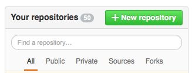
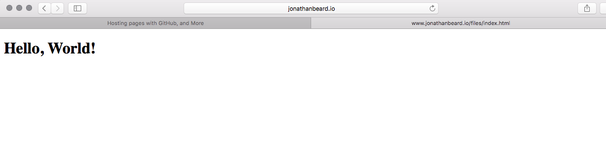
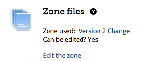
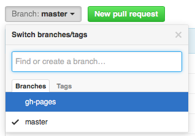

So you want to start a website, and you want to use GitHub pages. The first thing you'll need to do is make a new repository on GitHub for your website. So once you're logged in, and on your main page, click on the green button that says "+ New repository" as shown below: 
Once you have a new repository set up, you'll need to make a branch in addition to the default "main" that is created when you make the repository. It'll have to be called "gh-pages." At this point it's worth mentioning that if you don't want to build a page, you can use GitHub's page generator feature accessible through settings. If you want to make your own page, then continue.
So now we need to check out our newly created repositories, first the main branch where we'll keep the website project files (if we need such a thing, useful for scratch).
git clone [repo name goes here]
Now we need ot make our gh-pages branch, assuming you didn't make your page using the page generator. I prefer keeping a totally separate copy since I use Markdown and several other homegrown tools to generate my webpage from source.
git clone [repo name goes here]_site
git checkout -b gh-pages
git push origin gh-pages
Now you have a new branch in the xxx_site folder. You can put an index.html there if you like to, feel free to download this one directly to the gh-pages repo.
wget www.jonathanbeard.io/files/index.html
If everything is set up correctly, you can now commit this branch again:
git add *
git commit -a -m "initial commit"
git push -u origin gh-pages
In a few moments you should be able to go to your website as your user name, as in:
[username].github.io
And if you've added the simple "Hello World" then you should end up within something that looks like this:

Now you've purchased a web domain name, then you'll probably want to get it to point to your git-hub page, to do this, we'll need to add set up a few more things. First things first, lets add a CNAME file to the gh-pages branch of your repo. What needs to go in this is the name of the domain that you've purchased with the proper sub-domain to point to this page (don't worry if you don't know the difference between apex/base/root domain and sub-domain, just know that www is technically a sub-domain).
For instance, here's the CNAME file for my domain:
http://www.jonathanbeard.io
Make a file in gh-pages like this:
cd [your repo root, i.e., gh-pages branch]
echo [your domain name] >> CNAME
Feel free to commit the repo to the gh-pages branch now. Next we'll need to set up the DNS zone to know where to go to find your page with your DNS provider (in almost every instance this will be the company you purchased your domain name from). The two I'm most familiar with are Gandi and GoDaddy so, I'm going to stick to these two. This shouldn't take but a few moments using the GUI on the vendors website (GoDaddy and Gandi are both quite simple). Using Gandi you're looking for something that looks like this:

With GoDaddy you'll get something like this:

Once you're in you'll need to edit the files to be something like:
www 3600 IN CNAME [github user name].github.io.
There are quite a few options when setting the DNS zone, if you're not an advanced user (I'm assuming your not if you're reading this), lets stick with the single subdomain www. If you want to know more about what each line means within the zone file and what else you can do then I suggest you look at the
$>dig www.jonathanbeard.io +nostats +nocomments +nocmd
; <<>> DiG 9.8.3-P1 <<>> www.jonathanbeard.io +nostats +nocomments +nocmd
;; global options: +cmd
;www.jonathanbeard.io. IN A
www.jonathanbeard.io. 3600 IN CNAME jonathan-beard.github.io.
jonathan-beard.github.io. 3600 IN CNAME github.map.fastly.net.
github.map.fastly.net. 24 IN A 23.235.40.133